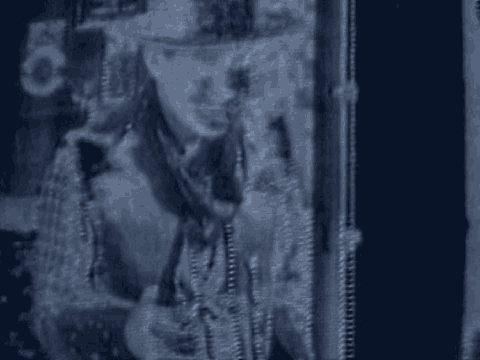

9 A defendant never has the burden of
10 disproving the existence of anything which the
11 government must prove beyond a reasonable
12 doubt. The burden is wholly upon the
13 government; the law does not at all require
14 Mr. Mohamed to produce evidence that a
15 particular aggravating factor does not exist or
16 that death is not an appropriate sentence.
17 As such, Mr. Mohamed is not required
18 to assert or establish any mitigating factors.
19 However, if one or more mitigating factors are
20 asserted, it is Mr. Mohamed's burden to
21 establish any mitigating factors by a
22 preponderance of the evidence. To prove
23 something by a preponderance of the evidence is
24 a lesser standard of proof than proof beyond a
25 reasonable doubt. To prove something by a
REPORTERS CENTRAL
(212) 594-3582
8709
1 173lbinf
CHARGE
2 preponderance of the evidence is to prove that
3 it is more likely true than not true. It is
4 determined by considering all of the evidence
5 and deciding what of the evidence is more
6 believable. If, however, the evidence is
7 equally balanced, you cannot find that the
8 mitigating factor has been proved.
9 The preponderance of the evidence is
10 not determined by the greater number of
11 witnesses or exhibits presented by the
12 government or the defendant. Rather, it is the
13 quality and persuasiveness of the information
14 which controls.
15 In making all the determinations you
16 are required to make in this phase of the
17 trial, you may consider any information
18 presented during this penalty phase and the
19 guilt phase, but excluding any evidence which
20 was introduced solely against another
21 defendant. Also, recall that for our purposes
22 here the terms "evidence" and "information"
23 have the same meaning.
24 In deciding what the facts are, you
25 may have to decide which testimony you believe
REPORTERS CENTRAL
(212) 594-3582
8710
1 173lbinf
CHARGE
2 and what testimony you do not believe. You may
3 believe all of what a witness said, or only
4 part of it, or none of it. In deciding what
5 testimony of any witness to believe, consider
6 the witness's intelligence, the opportunity the
7 witness had to see or hear the things testified
8 about, the witness's memory, any motives that
9 witness may have for testifying in a certain
10 way, the manner of the witness while
11 testifying, whether that witness said something
12 different at an earlier time, the general
13 reasonableness of the testimony, and the extent
14 to which the testimony is consistent with other
15 evidence that you believe.
16 Additionally, because the law does
17 not permit any witness to state whether he or
18 she favors or opposes the death penalty in this
19 case, you should draw no inference either way
20 from the fact that no witnesses have testified
21 as to their views on this subject.
22 Mr. Mohamed did not testify in this
23 case. He has a right not to do so and there is
24 no burden upon Mr. Mohamed to prove that he
25 should not be sentenced to death. Instead, the
REPORTERS CENTRAL
(212) 594-3582
8711
1 173lbinf
CHARGE
2 burden is entirely on the prosecution to prove,
3 beyond a reasonable doubt, that a sentence of
4 death is in fact justified. Accordingly, that
5 Mr. Mohamed did not testify must not be
6 considered by you in any way, or even
7 discussed, in arriving at any aspect of your
8 sentencing decision, including the existence or
9 nonexistence of an alleged aggravating or
10 mitigating factor.
11 You must deliberate and determine the
12 appropriate sentence for each of the capital
13 counts separately. Although I will be
14 discussing the capital counts as a group, your
15 findings regarding gateway factors, aggravating
16 factors, and all other issues pertaining to
17 these counts must treat each of these counts
18 separately. It is possible that, even though
19 all of the counts are connected with the
20 bombing of the Dar es Salaam embassy, you may
21 find differences which would justify different
22 sentences on different counts.
23 The instructions I am about to give
24 you, as well as the Special Verdict Form you
25 will be completing, will first address your
REPORTERS CENTRAL
(212) 594-3582
8712
1